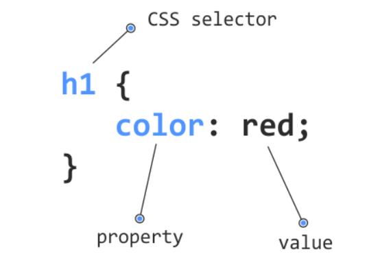
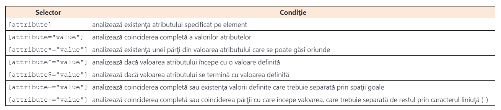
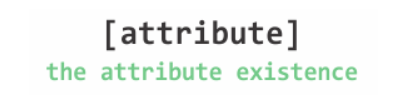
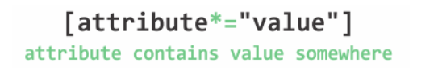
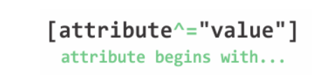
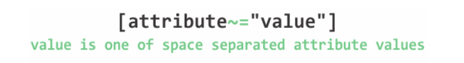

Selectorii de atribute
Activitatea de stilizare face parte din grupul celor mai importante activităţi efectuate în timpul creării site-urilor. Limbajul de stilizare a site-urilor se numeşte CSS. Baza acestui limbaj o constituie regulile CSS, formate din selectori şi declaraţii. Exemplul structurii de bază a unei simple reguli CSS este prezentat în imaginea de mai jos
Prin regula CSS prezentată în imaginea de mai sus, se obţine setarea culorii albastre a textului pe toate titlurile de tip h1. Pe baza căror lucruri ştim că o astfel de stilizare va fi aplicată pe toate titlurile h1? Răspunsul la această întrebare se află în noţiunea de selectori.
Selectorii CSS reprezintă mecanismul de bază cu ajutorul căruia se stabilesc elementele pe care va fi aplicată stilizarea definită prin regula CSS.
Limbajul CSS cunoaşte diferite tipuri de selectori. În selectorii CSS de bază intră:
- selectorul universal;
- selectorul de tip;
- selectorul class;
- selectorul id;
- selectorii bazaţi pe relaţii.
Pe lângă selectorii menţionaţi, CSS cunoaşte şi diferiţi selectori avansaţi, pe care îi vom aborda în acest modul, cum ar fi:
- selectorii de atribute;
- pseudoclasele;
- pseudoelementele.
Ce sunt atributele HTML?
Toate elementele HTML pot deţine atribute. Atributele se folosesc pentru o descriere suplimentară sau pentru configurarea elementelor HTML. De exemplu, în timpul definirii elementului img, de obicei se folosesc două atribute HTML:
<img src="test-img.jpg" alt="this is test image">
Crearea elementului img este urmată de definirea următoarelor două atribute HTML: src şi alt. Folosind atributul src, definim calea până la imaginea care va fi afişată pe pagina web, în timp ce prin folosirea atributului alt definim descrierea imaginii care va apărea pe pagină în situaţiile în care nu va fi posibilă încărcarea imaginii.
Principalele proprietăţi ale atributelor HTML pe care trebuie să le ştiţi sunt următoarele:
- Atributele HTML se găsesc întotdeauna pe tagul de deschidere sau pe cel cu autodeschiere, dar nu se găsesc niciodată pe tagul de închidere.
- Atributele HTML se definesc în forma unor perechi de chei şi valori.
- Toate elementele HTML pot deţine atribute.
- Există atribute care se pot găsi pe toate elementele HTML, ele numindu-se atribute globale (class, id, lang, title, style...).
Selectarea elementelor pe baza atributelor
Atributele HTML, pe lângă proprietăţile descrise, se pot folosi şi ca un criteriu pentru selectarea elementelor. Desigur, cele mai cunoscute atribute HTML folosite pentru selectare sunt atributele id şi class:
#some-id {
color: red;
}
.some-class {
color: red;
}
În regulile CSS tocmai prezentate, sunt folosiţi selectorii id şi class pentru selectare. Cu primul selector (#some-id) va fi selectat elementul care ca valoare a atributului id deţine some-id. Cu al doilea selector se vor selecta toate elementele care ca valoare a atributului class deţine some-class.
În tabelul de mai jos sunt prezentate modalităţile în care se poate selecta elementul (sau elementele) pe baza atributelor.
Selectarea pe baza existenţei atributului
CSS permite selectarea unui element pe baza existenţei unui anumit atribut sau pe baza unei valori specifice pe care o are un atribut. Când selectăm un element pe baza existenţei unui atribut, sintaxa selectorului este identică celei din imaginea de mi jos
Pur şi simplu, pe partea obişnuită a selectorului se adaugă partea cu paranteze drepte.
Următorul exemplu ilustrează situaţia în care se selectează toate linkurile care deţin un atribut specific:
a[target] {
color: yellow;
}
În modul prezentat vor fi selectate toate elementele a care deţin atributul target.
Selectarea pe baza valorii exacte a atributului
Când trebuie selectate elementele pe baza valorii unui atribut, sintaxa selectorului este identică celei din imaginea de mai jos

Între parantezele drepte, pe lângă denumirea atributului, se specifică şi valoarea sa.
a[target="_blank"] {
color: yellow;
}
În acest fel, vor fi selectate toate elementele a a căror valoare a atributului target este _blank.
Selectarea pe baza unei părţi din valoarea atributului care se poate găsi oriunde
CSS permite selectarea elementelor pe baza unei părţi din valoarea atributului. Pe lângă asta, această parte a valorii se poate găsi oriunde în cadrul valorii propriu-zise. Sintaxa unui astfel de selector este prezentată în imaginea de mai jos
Exemplul acestui selector este următorul:
div[class*="wrap"] {
background-color: yellow;
}
În acest fel, vor fi selectate toate elementele div care în denumirea clasei au secvenţa caracterului wrap, oriunde. Elementul care ar fi fost selectat în acest fel, poate arăta așa:
<div class="wrapper">
…
</div>
Selectarea pe baza textului cu care începe valoarea atributului
CSS asigură selectarea elementelor pe baza textului cu care începe valoarea unui anumit atribut. Sintaxa acestui selector este prezentată în imaginea de mai jos
Exemplul de utilizare a unui astfel de selector este selectarea tuturor linkurilor care indică acelaşi site, adică acelaşi domeniu, indiferent de pagina concretă a acestui site. Aceste linkuri pot arăta astfel:
<a href="http://www.link-group.eu">Link Group</a>
<a href="http://www.link-group.eu/careers">Link Careers</a>
<a href="http://www.link-group.eu/about-us-0">About Link</a>
Toate cele trei linkuri prezentate au un domeniu identic: http://www.link-group.eu. Totuşi, paginile concrete se deosebesc. Dacă trebuie selectate toate linkurile ale căror atribut href începe cu http://www.link-group.eu, se poate scrie un selector care arată astfel:
a[href^="http://www.link-group.eu"] {
color: red;
}
Selectarea pe baza textului cu care se termină valoarea atributului
Similar cu exemplul anterior, CSS asigură selectarea elementului pe baza textului cu care se termină valoarea atributului. Sintaxa acestui selector este prezentată în imaginea de mai jos

Un exemplu excelent de utilizare a unui astfel de selector este selectarea linkurilor de descărcare (download) pe baza extensiei fişierului. Exemplul de selector care va selecta doar linkurile care indică fişiere pdf este următorul:
a[href$=".pdf"] {
font-style: italic;
}
Linkul care va fi selectat în acest mod poate arăta astfel:
<a href="demo.pdf">Download PDF document</a>
Selectarea pe baza valorii identice sau a unei părţi din valoarea atributului care este separată prin spaţii goale
O practică deseori întâlnită este setarea mai multor clase pe un element HTML. Exemplul unui astfel de element este următorul:
<h1 class="heading animate fade">This is document heading</h1>
Dacă trebuie selectat un element pe baza denumirii unei clase, atunci selectorul class este suficient, deoarece asigură selectarea pe baza denumirilor individuale ale claselor:
.heading {
color: blue;
}
sau
.fade {
color: blue;
}
Totuşi, acest lucru nu se poate obţine cu alte atribute.Să analizăm următorul exemplu:
<a href="http://www.link-group.eu" target="_blank" title="link">Link Group</a>
<a href="http://www.link-group.eu/careers" title="link careers">Link Careers</a>
<a href="http://www.link-group.eu/about-us-0" title="about-link">About Link</a>
Tocmai am prezentat trei linkuri. Fiecare link are atributul title cu diferite valori. Ce s-ar fi întâmplat dacă am fi selectat toate elementele a care în cadrul valorii atributului title au cuvântul link? Acest lucru se poate obţine prin folosirea selectorului ilustrat în imaginea de mai jos
Acest selector se poate formata în felul următor:
a[title~="link"] {
color: red;
}
În acest fel, primul şi al doilea link vor fi colorate cu roşu, având în vedere că aceste două linkuri, în cadrul valorii atributului title, au cuvântul link. Şi ultimul element a din cadrul atributului title are textul link, dar el nu este separat prin spaţii goale de restul valorilor, aşadar, nu satisface condiţia acestui selector.
Selectarea pe baza valorii complete sau a începutului ei după care urmează caracterul liniuţă (-)
O practică deseori întâlnită este în situaţiile în care valorile atributelor conţin mai multe cuvinte care se separă prin caracterul liniuţă (-):
<h1 class="top-header">Welcome</h1>
<p class="top-text">Hello world!</p>
<p class="top">Hello world again!</p>
<p class="top text">Hello world once more!</p>
Liniile prezentate ilustrează elementele în care toate valorile atributului class încep cu valoarea top. CSS are selectorul care efectuează selectarea elementelor pe baza începutului valorii unui atribut. Totuşi, spre deosebire de selectorul menţionat mai devreme, cu un scop similar, se ia în considerare începutul valorii şi până la caracterul liniuţă (-). Selectorul cu acest comportament are o sintaxă identică celei prezentate în imaginea de mai jos

Exemplul acestui selector este următorul:
[class|="top"] {
background: yellow;
}
Acest selector va alege elementele care satisfac următoarele criterii:
- atributul class are valoarea top;
- atributul class începe cu valoarea top, care este separată de restul textului prin caracterul liniuţă (-).
Practic, toate acestea înseamnă că în exemplul prezentat, în acest mod, se va selecta titlul h1 şi primele două elemente de tip paragraph. Nu va fi selectat doar ultimul paragraf, deoarece în cadrul valorii sale class, top nu este separat prin liniuţă de restul valorilor.